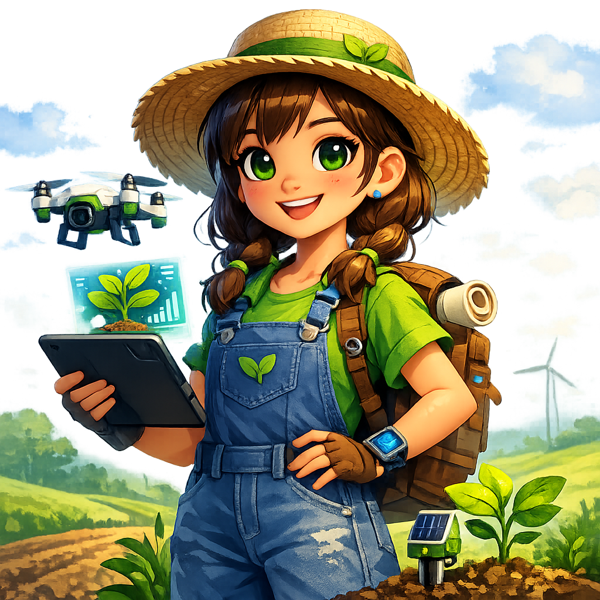

Descubra como a união entre a tecnologia, a agricultura moderna e a sustentabilidade pode preservar os nossos recursos naturais e garantir um futuro próspero.
Explorar Projeto
Olá! Eu sou a Lia! 👩🌾
Sou uma jovem apaixonada pela natureza e pela inovação no campo. No projeto Raízes do Amanhã, vou te mostrar como as novas tecnologias ajudam a preservar os ecossistemas enquanto produzimos alimentos de qualidade!
Conscientizar sobre a preservação e o cuidado do meio ambiente.
Demonstrar a importância e os avanços da agricultura moderna.
Mostrar como ferramentas digitais otimizam os recursos no campo.
Selecione um alimento e descubra o impacto do consumo de água
Entender que os recursos naturais são finitos.
Aplicar drones e IA para evitar desperdícios.
Garantir um futuro equilibrado e produtivo.